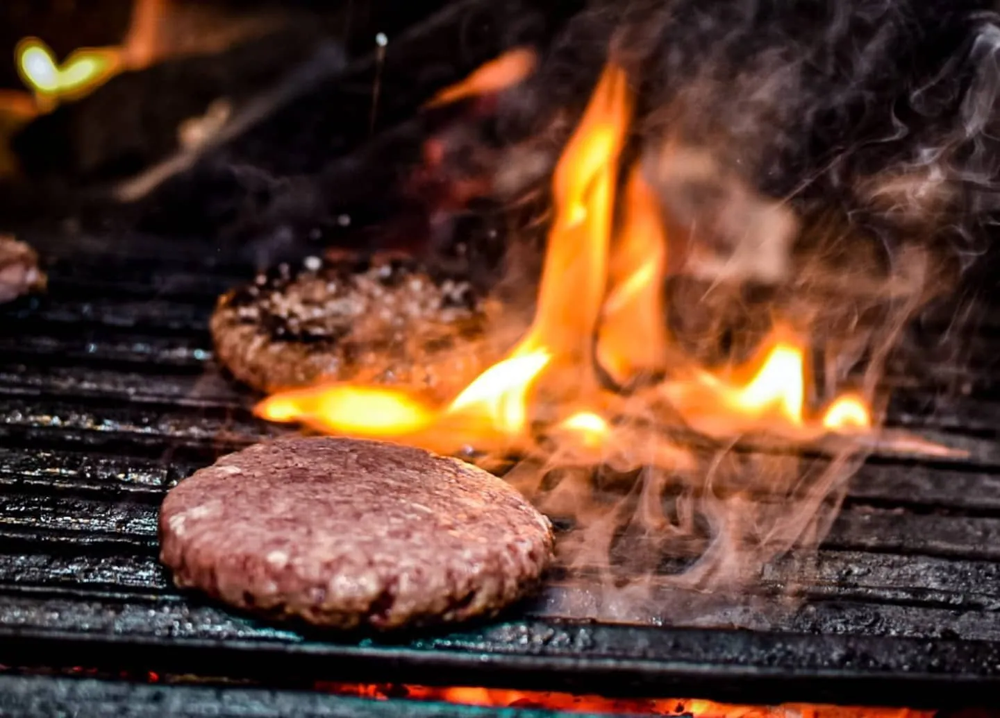
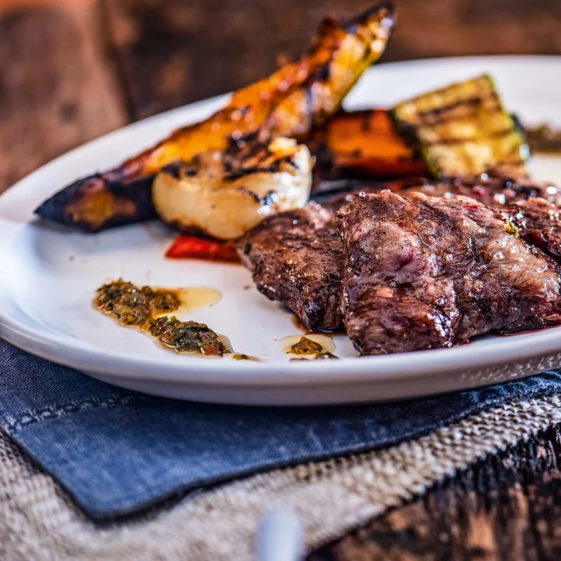
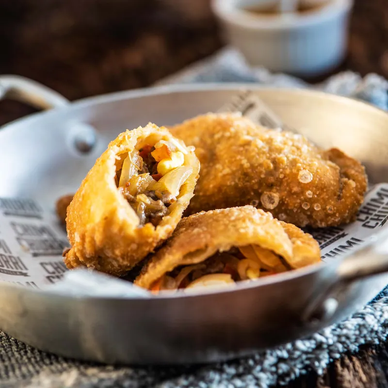
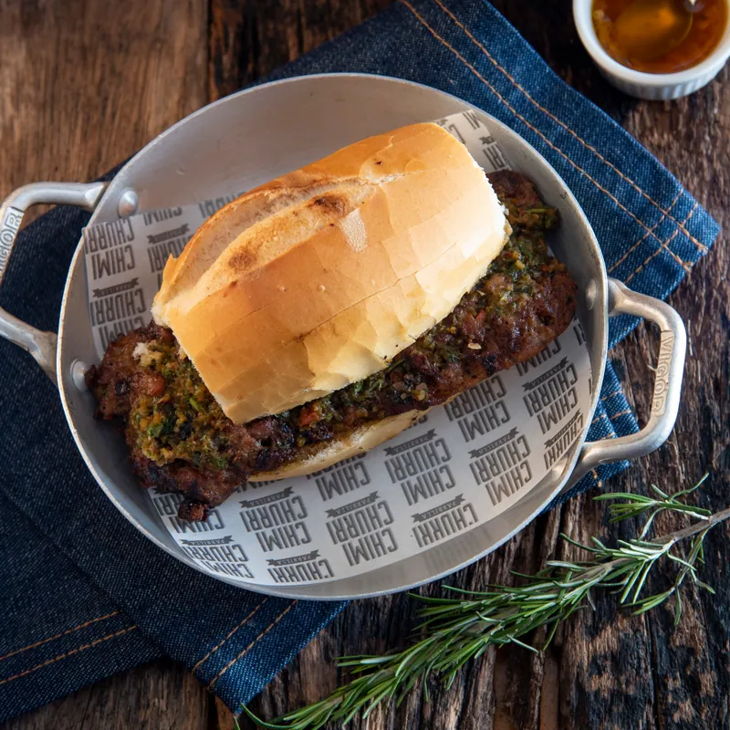
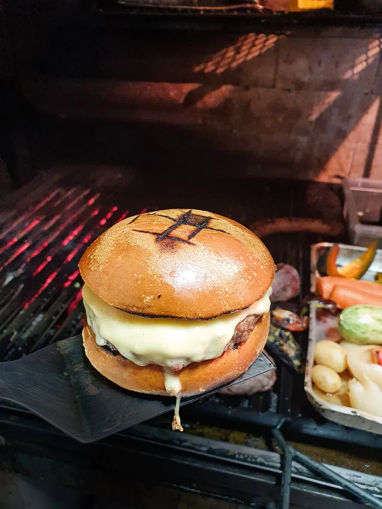
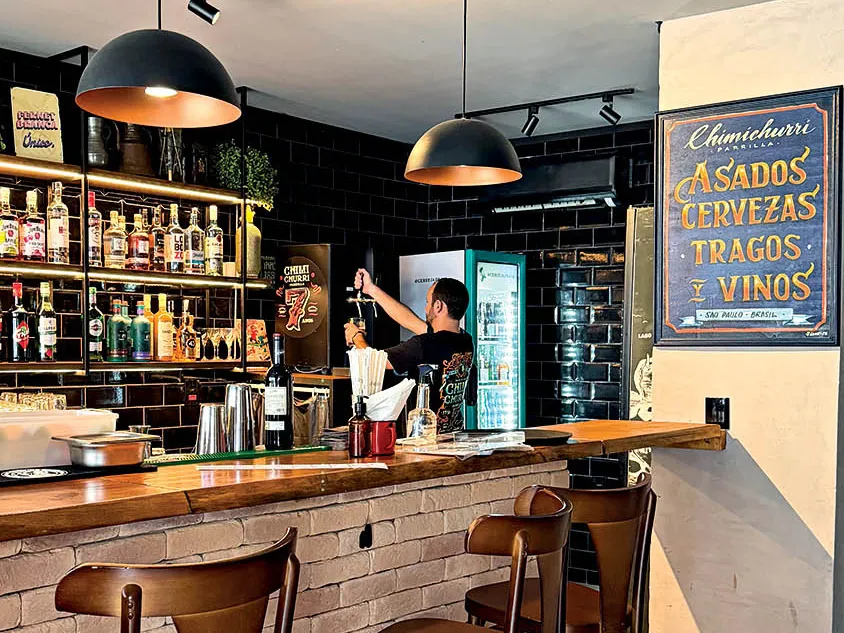

PARRILLA ARGENTINA DE BAIRRO
FOGO ACESO.
MESA CHEIA.
Chimichurri Parrilla.
Perdizes, São Paulo.
01 / A PARRILLA
O FOGO
RESOLVE.
Carne na parrilla.
Chimichurri por cima.
Conversa em volta.
Os cortes chegam fatiados, com o molho que dá nome à casa e vegetais grelhados. Do bife ancho à entraña, a brasa é o ponto de partida.
2019
Por Tom Peñafiel
e Taba Toledo.
02 / NA MESA
O QUE SAI
DA BRASA.
Tem corte para dividir.
E petisco para começar.

OS CORTES
Bife ancho, entraña e asado de tira. Chimichurri e vegetais para acompanhar.

EMPANADAS
Fritas e douradas. Uma boa maneira de começar a mesa.

CHORIPÁN
A linguiça da casa no pão. Um clássico do Chimi.
03 / O HAMBÚRGUER
POUCA
CONVERSA.
MUITO
HAMBÚRGUER.
Carne, pão, queijo.
O hambúrguer do Chimi tem lugar próprio na mesa.
Destaque na seleção de Erick Grossi para a CNN Brasil, em 2025.
Ler a matéria

04 / A CASA
A MESA É
DO BAIRRO.
Balcão, calçada.
Vinho, cerveja.
E mais uma conversa.
Desde 2019 na Alfonso Bovero. Uma parrilla com jeito de bar, para sentar, dividir um corte e ficar mais um pouco.
Ouça as playlists nos canais da casaA fila também
está no celular.
- Abra a fila digital da casa.
- Confira se ela está disponível.
- Siga as orientações do serviço oficial.
A disponibilidade e as orientações aparecem no serviço da casa. Para informações sobre reservas, delivery ou retirada, fale diretamente por telefone.
NA IMPRENSA
VEJA SÃO PAULOO Chimi no guia Comer & Beber.
2026 · Ler resenhaCNN BRASILNa mesa dos chefs: os pedidos de Erick Grossi.
2025 · Ler matéria07 / VISITE
A GENTE
SE VÊ
EM PERDIZES.
Perdizes · São Paulo, SPComo chegar pelo Maps
HORÁRIOS
- Terça a quinta
- 12h às 15h30
18h às 23h - Sexta
- 12h às 23h
- Sábado
- 12h30 às 23h
Horários publicados no Instagram oficial. Domingo, segunda e feriados: confirme com a casa antes de vir.